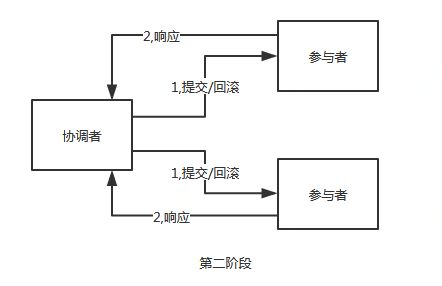

一个复杂的系统往往都是从一个小而简的系统发展衍化而来，为了满足日益增长的业务需求，不断的增加系统的复杂度，从单体架构逐步发展为分布式架构，而分布式系统架构的设计主要关注：高性能，高可用，高拓展
分布式事务
高可用是指系统无中断的执行功能的能了，代表了系统的可用程度，是进行系统设计时必须要遵守的准则之一。
而高可用的实现方案，无外乎就是冗余，就存储的高可用而言，问题不在于如何进行数据备份，而在于如何规避数据不一致对业务造成的影响
对于分布式系统而言，要保证分布式系统中的数据一致性就需要一种方案，可以保证数据在子系统中始终保持一致，避免业务出现问题，这种实现方案就叫做分布式事务，要么一起成功，要么一起失败，必须是一个整体性的事务
举个栗子：
在电商网站中，用户对商品进行下单，需要在订单表中创建一条订单数据，同时需要在库存表中修改当前商品的剩余库存数量，两步操作一个添加，一个修改，我们一定要保证这两步操作一定同时操作成功或失败，否则业务就会出现问题
建立时：
业务量不大，用户少，系统只是一个单体架构，订单表与库存表都在一个数据库中，这时可以使用mysql的本地事务保证数据一致性

发展期：
业务发展迅速，用户量变多，单数据已经出现了性能瓶颈，按照业务纬度进行分库，分为订单库和库存库，由于跨库跨机器，mysql的本地事务不能再保证订单库和库存库的数据一致性，这时候就需要分布式事务来保证

成熟期：
业务拓展，单体架构已经满足不了需求，进而衍化成了分布式系统，这时的订单和库存已经拆分为了两个子系统提供服务，子系统间使用rpc进行通信，但是无论系统发展成什么样，我们都要保证业务不出问题，保证订单和库存的数据一致，这时候要思考下在服务之间我们应如何保证数据一致

理论基础
在讲解具体方案之前，有必要了解一下分布式中数据设计需要遵循的理论基础，CAP理论和BACS理论，为后面的实践铺平道路
CAP理论
CAP：Consistency Acailability Partition tolerance 的简写
因为分布式系统中系统肯定部署在多台机器上，无法保证网络做到100%的可靠，所以网络分区一定存在，即P一定存在；
在出现网络分区后，就出现了可用性和一致性的问题，我们必须要在这两者之间进行取舍，因此就有了两种架构：CP架构，AP架构；
CP架构
当网络分区出现后，为了保证一致性，就必须拒接请求，否则无法保证一致性
- 当没有出网络分区时，系统A与系统B的数据一致，X=1
- 将系统A的X修改为2，X=2
- 当出现网络分区后，系统A与系统B之间的数据同步数据失败，系统B的X=1
- 当客户端请求系统B时，为了保证一致性，此时系统B应拒绝服务请求，返回错误码或错误信息
上面这种方式就违背了可用性的要求，只满足一致性和分区容错，即CP
CAP理论是忽略网络延迟，从系统A同步数据到系统B的网络延迟是忽略的
CP架构保证了客户端在获取数据时一定是最近的写操作，或者获取到异常信息，绝不会出现数据不一致的情况
AP架构
当网络分区出现后，为了保证可用性，系统B可以返回旧值，保证系统的可用性
- 当没有出网络分区时，系统A与系统B的数据一致，X=1
- 将系统A的X修改为2，X=2
- 当出现网络分区后，系统A与系统B之间的数据同步数据失败，系统B的X=1
- 当客户端请求系统B时，为了保证可用性，此时系统B应返回旧值，X=1
上面这种方式就违背了一致性的要求，只满足可用性和分区容错，即AP
CP架构保证了客户端在获取数据时无论返回的是最新值还是旧值，系统一定是可用的
CAP理论关注粒度是数据，而不是整体系统设计的策略
BASE理论
BASE理论指的是基本可用 Basically Available，软状态 Soft Stat，最终一致性 Eventual Consistency，核心思想是即便无法做到强一致性，但应该可以有采用适合的方式保证最终一致性
BASE：Basically Available Soft Stat Eventual Consistency的简写
BA：Basically Available 基本可用
分布式系统在出现故障的时候，允许损失部分可用性，即保证核心可用
S：Soft Stat 软状态
允许系统存在中间状态，而该中间状态不会影响系统整体可用性
E：Consistency 最终一致性
系统中的所有数据副本经过一定时间后，最终能够达到一致的状态
BASE理论本质上是对CAP理论的延伸，是对 CAP 中 AP 方案的一个补充
分布式事务协议
前提：在单体架构中，事务的保证有mysql实现，不用我们实现，当单个数据库的性能出现瓶颈的时候，对数据库进行分表分库处理，按业务纬度将订单和库存的表分为两个库，订单库和库存库
X/Open XA 协议
XA是一个分布式事务协议，由Tuxedo提出。XA规范主要定义了（全局）事务管理器（Transaction Manager）和（局部）资源管理器（Resource Manager）之间的接口。XA接口是双向的系统接口，在事务管理器Transaction Manager）以及一个或多个资源管理器（Resource Manager）之间形成通信桥梁
XA协议采用两阶段提交方式来管理分布式事务。XA接口提供资源管理器与事务管理器之间进行通信的标准接口
2PC 二阶段提交 协议
二阶段提交（Two-phase Commit），是指，为了使基于分布式系统架构下的所有节点在进行事务提交时保持一致性而设计的一种算法(Algorithm)。通常，二阶段提交也被称为是一种协议(Protocol)。在分布式系统中，每个节点虽然可以知晓自己的操作时成功或者失败，却无法知道其他节点的操作的成功或失败。当一个事务跨越多个节点时，为了保持事务的ACID特性，需要引入一个作为协调者的组件来统一掌控所有节点(称作参与者)的操作结果并最终指示这些节点是否要把操作结果进行真正的提交(比如将更新后的数据写入磁盘等等)。因此，二阶段提交的算法思路可以概括为： 参与者将操作成败通知协调者，再由协调者根据所有参与者的反馈情报决定各参与者是否要提交操作还是中止操作
二阶段提交算法的成立基于以下假设：
- 该分布式系统中，存在一个节点作为协调者(Coordinator)，其他节点作为参与者(Cohorts)。且节点之间可以进行网络通信。
- 所有节点都采用预写式日志，且日志被写入后即被保持在可靠的存储设备上，即使节点损坏不会导致日志数据的消失。
- 所有节点不会永久性损坏，即使损坏后仍然可以恢复
二阶段提交分为两阶段：第一阶段：投票阶段，第二阶段：提交阶段

投票阶段 Prepares

- 协调者向所有参与者询问是否可以执行提交操作，并开始等待各参与者的响应
- 参与者执行事务操作，如果执行成功就返回Yes响应，如果执行失败就返回No响应
- 如果协调者接受参与者响应超时，也会认为执行事务操作失败
提交阶段 commit

- 如果第一阶段汇中所有参与者都返回yes响应，协调者向所有参与者发出提交请求，所有参与者提交事务
- 如果第一阶段中有一个或者多个参与者返回no响应，协调者向所有参与者发出回滚请求，所有参与者进行回滚操作
二阶段提交优点：尽量保证了数据的强一致，但不是100%一致
缺点：
单点故障
由于协调者的重要性，一旦协调者发生故障，参与者会一直阻塞，尤其时在第二阶段，协调者发生故障，那么所有的参与者都处于锁定事务资源的状态中，而无法继续完成事务操作
同步阻塞
由于所有节点在执行操作时都是同步阻塞的，当参与者占有公共资源时，其他第三方节点访问公共资源不得不处于阻塞状态
数据不一致
在第二阶段中，当协调者想参与者发送提交事务请求之后，发生了局部网络异常或者在发送提交事务请求过程中协调者发生了故障，这会导致只有一部分参与者接收到了提交事务请求。而在这部分参与者接到提交事务请求之后就会执行提交事务操作。但是其他部分未接收到提交事务请求的参与者则无法提交事务。从而导致分布式系统中的数据不一致
二阶段提交的问题
如果协调者在第二阶段发送提交请求之后挂掉，而唯一接受到这条消息的参与者执行之后也挂掉了，即使协调者通过选举协议产生了新的协调者并通知其他参与者进行提交或回滚操作的话，都可能会与这个已经执行的参与者执行的操作不一样，当这个挂掉的参与者恢复之后，就会产生数据不一致的问题
3PC 三阶段提交 协议
三阶段提交（Three-phase commit），三阶段提交是为解决两阶段提交协议|的缺点而设计的。 与两阶段提交不同的是，三阶段提交是“非阻塞”协议。三阶段提交在两阶段提交的第一阶段与第二阶段之间插入了一个准备阶段，使得原先在两阶段提交中，参与者在投票之后，由于协调者发生崩溃或错误，而导致参与者处于无法知晓是否提交或者中止的“不确定状态”所产生的可能相当长的延时的问题得以解决
三阶段提交的三个阶段：CanCommit，PreCommit，DoCommit三个阶段

询问阶段 CanCommit
协调者向参与者发送commit请求，参与者如果可以提交就返回Yes响应，否则返回No响应
准备阶段 PreCommit
协调者根据参与者在询问阶段的响应判断是否执行事务还是中断事务
- 如果所有参与者都返回Yes，则执行事务
- 如果参与者有一个或多个参与者返回No或者超时，则中断事务
参与者执行完操作之后返回ACK响应，同时开始等待最终指令
提交阶段 DoCommit
协调者根据参与者在准备阶段的响应判断是否执行事务还是中断事务
- 如果所有参与者都返回正确的ACK响应，则提交事务
- 如果参与者有一个或多个参与者收到错误的ACK响应或者超时，则中断事务
- 如果参与者无法及时接收到来自协调者的提交或者中断事务请求时，会在等待超时之后，会继续进行事务提交
协调者收到所有参与者的ACK响应，完成事务
解决二阶段提交时的问题
在三阶段提交中，如果在第三阶段协调者发送提交请求之后挂掉，并且唯一的接受的参与者执行提交操作之后也挂掉了，这时协调者通过选举协议产生了新的协调者，在二阶段提交时存在的问题就是新的协调者不确定已经执行过事务的参与者是执行的提交事务还是中断事务，但是在三阶段提交时，肯定得到了第二阶段的再次确认，那么第二阶段必然是已经正确的执行了事务操作，只等待提交事务了，所以新的协调者可以从第二阶段中分析出应该执行的操作，进行提交或者中断事务操作，这样即使挂掉的参与者恢复过来，数据也是一致的。
所以，三阶段提交解决了二阶段提交中存在的由于协调者和参与者同时挂掉可能导致的数据一致性问题和单点故障问题，并减少阻塞，因为一旦参与者无法及时收到来自协调者的信息之后，他会默认执行提交事务，而不会一直持有事务资源并处于阻塞状态。
三阶段提交的问题
在提交阶段如果发送的是中断事务请求，但是由于网络问题，导致部分参与者没有接到请求，那么参与者会在等待超时之后执行提交事务操作，这样这些由于网络问题导致提交事务的参与者的数据就与接受到中断事务请求的参与者存在数据不一致的问题。
所以无论是2PC还是3PC都不能保证分布式系统中的数据100%一致
解决方案
强一致性分布式事务
单体架构多数据源，在业务开发中，肯定是先执行对订单库的操作，但是不提交事务，再执行对库存库的操作，也不提交事务，如果两个操作都成功，在一起提交事务，如果有一个操作失败，则两个都进行回滚
基于2PC/XA协议实现的JTA
我们已经知道了2PC和XA协议的原理，而JTA是java规范，是XA在java上的实现
JTA(Java Transaction Manager) :
- TransactionManager : 常用方法,可以开启,回滚,获取事务. begin(),rollback()…
- XAResouce : 资源管理,通过Session来进行事务管理,commit(xid)…
- XID : 每一个事务都分配一个特定的XID
JTA主要的原理是二阶段提交，当整个业务完成了之后只是第一阶段提交，在第二阶段提交之前会检查其他所有事务是否已经提交，如果前面出现了错误或是没有提交，那么第二阶段就不会提交，而是直接回滚，这样所有的事务都会做回滚操作
基于JTA这种方案实现分布式事务的强一致性
JTA的特点：
- 基于两阶段提交，有可能会出现数据不一致的情况
- 事务时间过长，阻塞
- 性能低，吞吐量低
实现可以使用基于JTA实现的jar包Atomikos 使用例子可以自己百度一下
正常架构设计中是否应该出现这种跨库的操作，我觉得是不应该的，如果过按业务拆分将数据源进行分库，我们应该同时将服务也拆分出去才合适，应遵循一个系统只操作一个数据源（主从没关系），避免后续可能会出现的多个系统调用一个数据源的情况
最终一致性分布式事务方案（柔性事务）
JTA方案适用于单体架构多数据源时实现分布式事务，但对于微服务间的分布式事务就无能为力了，我们需要使用其他的方案实现分布式事务
本地消息表
本地消息表的核心思想是将分布式事务拆分成本地事务进行处理
以本文中例子，在订单系统新增一条消息表，将新增订单和新增消息放到一个事务里完成，然后通过轮询的方式去查询消息表，将消息推送到mq，库存系统去消费mq

执行流程：
- 订单系统，添加一条订单和一条消息，在一个事务里提交
- 订单系统，使用定时任务轮询查询状态为未同步的消息表，发送到mq，如果发送失败，就重试发送
- 库存系统，接收mq消息，修改库存表，需要保证幂等操作
- 如果修改成功，调用rpc接口修改订单系统消息表的状态为已完成或者直接删除这条消息
- 如果修改失败，可以不做处理，等待重试
订单系统中的消息有可能由于业务问题会一直重复发送，所以为了避免这种情况可以记录一下 发送次数，当达到次数限制之后报警，人工接入处理；库存系统需要保证幂等，避免同一条消息被多次消费造成数据一致；
本地消息表这种方案实现了最终一致性，需要在业务系统里增加消息表，业务逻辑中多一次插入的DB操作，所以性能会有损耗，而且最终一致性的间隔主要有定时任务的间隔时间决定
MQ消息事务
消息事务的原理是将两个事务通过消息中间件进行异步解耦
订单系统执行自己的本地事务，并发送mq消息，库存系统接收消息，执行自己的本地事务，乍一看，好像跟本地消息表的实现方案类似，只是省去 了对本地消息表的操作和轮询发送mq的操作，但实际上两种方案的实现是不一样的
消息事务一定要保证业务操作与消息发送的一致性，如果业务操作成功，这条消息也一定投递成功

消息事务依赖于消息中间件的事务消息，基于消息中间件的二阶段提交实现的，RocketMQ就支持事务消息
执行流程：
- 发送prepare消息到消息中间件
- 发送成功后，执行本地事务
- 如果事务执行成功，则commit，消息中间件将消息下发至消费端
- 如果事务执行失败，则回滚，消息中间件将这条prepare消息删除
- 消费端接收到消息进行消费，如果消费失败，则不断重试
这种方案也是实现了最终一致性，对比本地消息表实现方案，不需要再建消息表，不再依赖本地数据库事务了，所以这种方案更适用于高并发的场景
最大努力通知
最大努力通知相比前两种方案实现简单，适用于一些最终一致性要求较低的业务，比如支付通知，短信通知这种业务
以支付通知为例，业务系统调用支付平台进行支付，支付平台进行支付，进行操作支付之后支付平台会尽量去通知业务系统支付操作是否成功，但是会有一个最大通知次数，如果超过这个次数后还是通知失败，就不再通知，业务系统自行调用支付平台提供一个查询接口，供业务系统进行查询支付操作是否成功

执行流程：
- 业务系统调用支付平台支付接口， 并在本地进行记录，支付状态为支付中
- 支付平台进行支付操作之后，无论成功还是失败，都需要给业务系统一个结果通知
- 如果通知一直失败则根据重试规则进行重试，达到最大通知次数后，不在通知
- 支付平台提供查询订单支付操作结果接口
- 业务系统根据一定业务规则去支付平台查询支付结果
这种方案也是实现了最终一致性
补偿事务TCC
TCC Try-Confirm-Cancel的简称，针对每个操作，都需要有一个其对应的确认和取消操作，当操作成功时调用确认操作，当操作失败时调用取消操作，类似于二阶段提交，只不过是这里的提交和回滚是针对业务上的，所以基于TCC实现的分布式事务也可以看做是对业务的一种补偿机制
TCC的三阶段：
- Try 阶段：对业务系统做检测及资源预留
- Confirm 阶段：对业务系统做确认提交，Try阶段执行成功并开始执行 Confirm阶段时，默认 Confirm阶段是不会出错的。即：只要Try成功，Confirm一定成功
- Cancel 阶段：在业务执行错误，需要回滚的状态下执行的业务取消，预留资源释放
在try阶段，是对业务系统进行检查及资源预览，比如订单和存储操作，需要检查库存剩余数量是否够用，并进行预留，预留操作的话就是新建一个可用库存数量字段，Try阶段操作是对这个可用库存数量进行操作
比如下一个订单减一个库存:

执行流程：
- Try阶段：订单系统将当前订单状态设置为支付中，库存系统校验当前剩余库存数量是否大于1，然后将可用库存数量设置为库存剩余数量-1，
- 如果Try阶段执行成功，执行Confirm 阶段，将订单状态修改为支付成功，库存剩余数量修改为可用库存数量
- 如果Try阶段执行失败，执行Cancel 阶段，将订单状态修改为支付失败，可用库存数量修改为库存剩余数量
基于TCC实现分布式事务，代码逻辑想对复杂一些，需要将原来的接口的逻辑拆分为：try，confirm ，cancel 三个接口的逻辑
基于TCC实现的分布式事务框架：ByteTCC，tcc-transaction
ByteTCC：https://github.com/liuyangming/ByteTCC
tcc-transaction：https://github.com/changmingxie/tcc-transaction
读完之后应该对分布式事务有了一个大致的了解，在实际生产中我们要尽量避免使用分布式事务，能转化为本地事务就用本地事务，如果必须使用分布式事务，还需要从业务角度多思考使用哪种方案更适合
总之行动之前多思考
推荐阅读：
23种设计模式详解
浅析网络协议
java并发编程 | 锁详解：AQS，Lock，ReentrantLock，ReentrantReadWriteLock
java并发编程 | 线程池详解
参考：
百度百科
分布式事务解决方案
深入理解分布式事务
深入理解分布式系统的2PC和3PC
柔性事务：最大努力通知